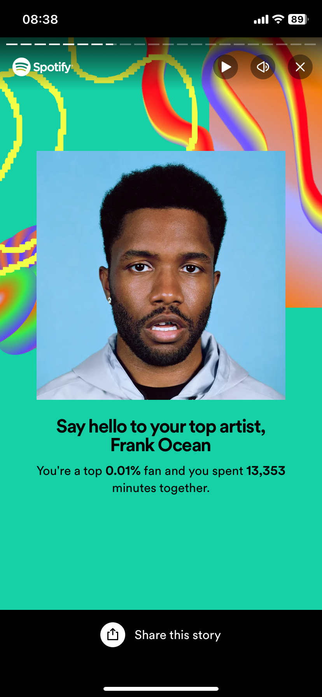

*The music platform that I use is Spotify! Sorry apple music people*
Get to know me by checking out my Spotify Wrapped from this year!
I listened to 64,864 minutes of music this year x_x
Top Genre: Indie

My Top Artist this year was Frank Ocean! I spent
13,353 minutes listening to his music. Woah!
My Top Song this year no surprise - White Ferrari by
Frank Ocean. This has been my top song on Spotify for 4 years now :p
Jumping Into my Top 5 Top 5
Top Artists
1. Frank Ocean
2. ODESZA
3. The Weekend
4. Khalid
5. Palace
Top Songs
1. White Ferrari
2. Power Trip
3. Bitter-Acoustic
4. A Lonely Night
5. Never Felt So Alone
Need new music? Be sure to head over to my
Spotify!